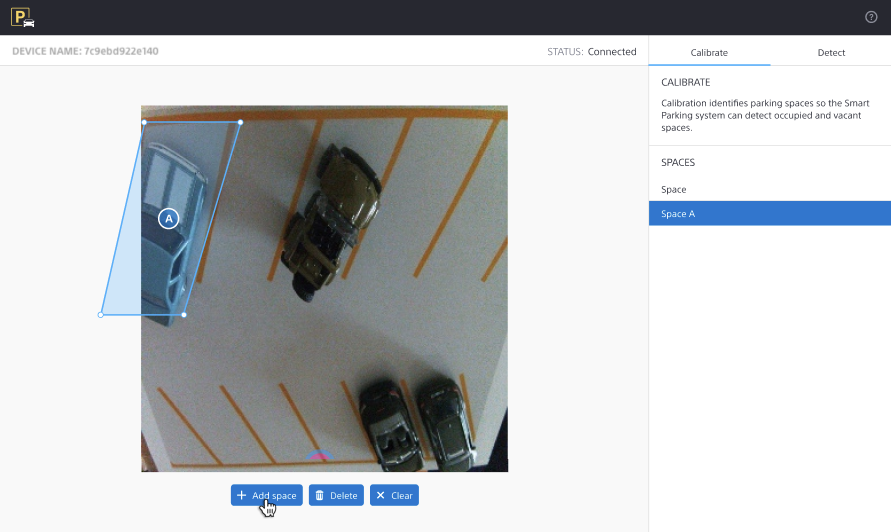
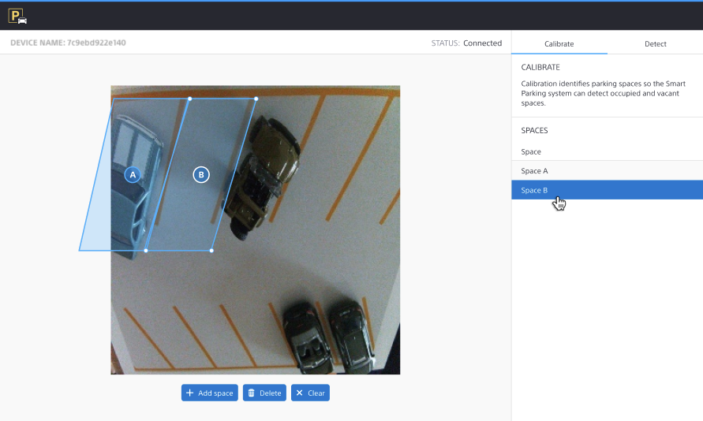
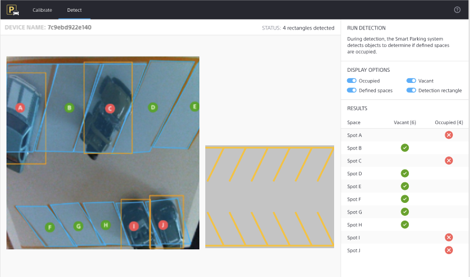

Using Smart Parking
Starting Smart Parking
The process for starting Smart Parking varies depending on your implementation:
If you're running a Docker image or running local instances of the front and backend, go to
localhost:8080to use the default port.
Note
Your implementation can also use a custom port. For more information see Editing environment settings.
If you're running Smart Parking inside Containers or Codespaces, go to the redirected port.
If you're running a cloud deployment, please refer to the documentation for your specific deployment.
In the Enter device name box, provide the device name of the Edge Device you want to use.
Using Offline Mode
An offline mode is provided to demonstrate Smart Parking without an Internet connection or Edge Device.
In offline mode, the system runs using prerecorded data. Please note the following limitations:
Offline Mode is displayed in the interface.
You can adjust parking space polygons to demonstrate the functionality, but the adjustments are not applied to the demonstration data.
To use Offline Mode, start Smart Parking and type mockDevice0 in the Enter device name box.
Adding spaces
Start Smart Parking.
In the Enter device name box, provide the device name of the Edge Device you want to use.
Click the Calibrate tab. The preview shows you the Edge Device's output.
Click Add space to add a polygon to the preview.
Drag the polygon to place it over a parking space.
Drag the corners of the polygon to align its edges with the parking space.
Repeat steps 4 through 6 for each parking space.
{kind=link}
Editing spaces
Start Smart Parking.
In the Enter device name box, provide the device name of the Edge Device you want to use.
Click the Calibrate tab. The preview shows you the Edge Device's output.
Select a space on the right side of the screen.
Drag the corners of the polygon to align its edges with the parking space.
Repeat steps 4 and 5 for each parking space.
{kind=link}
{kind=link}
Viewing vacant and occupied spaces
Start Smart Parking.
In the Enter device name box, provide the device name of the Edge Device you want to use.
Click the Detect tab. The preview shows an overview of the parking spaces and an Edge Device view with detection rectangles.
After detection is complete, a red indicator represents an occupied space, a green indicator represents a vacant space, an orange rectangle represents the detection area, and a blue polygon represents a defined space.
You can use the Occupied, Vacant, Defined spaces, and Detection rectangle switches to customize the display.
Tip
Click either image to change the current view.
Note
Depending on your specific use, the right and left images above may note be synchronized.
{kind=link}